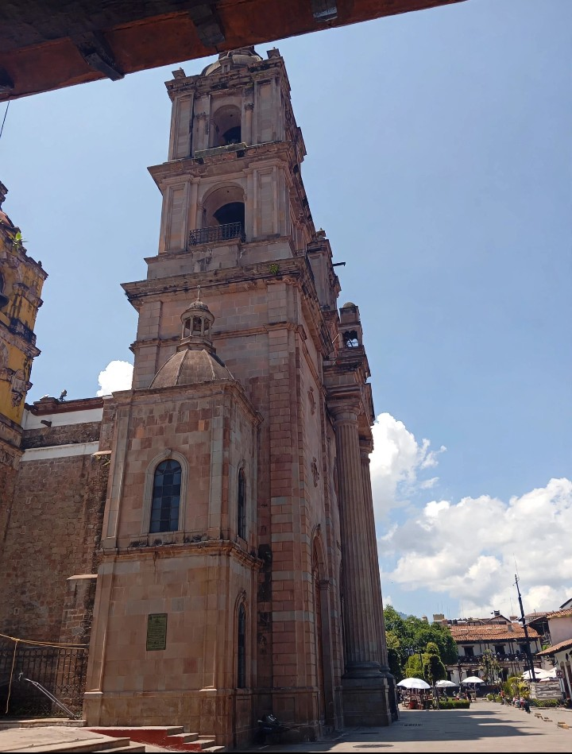
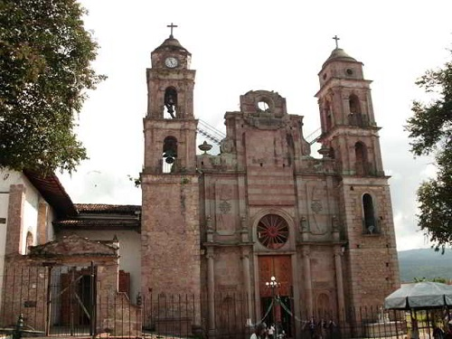
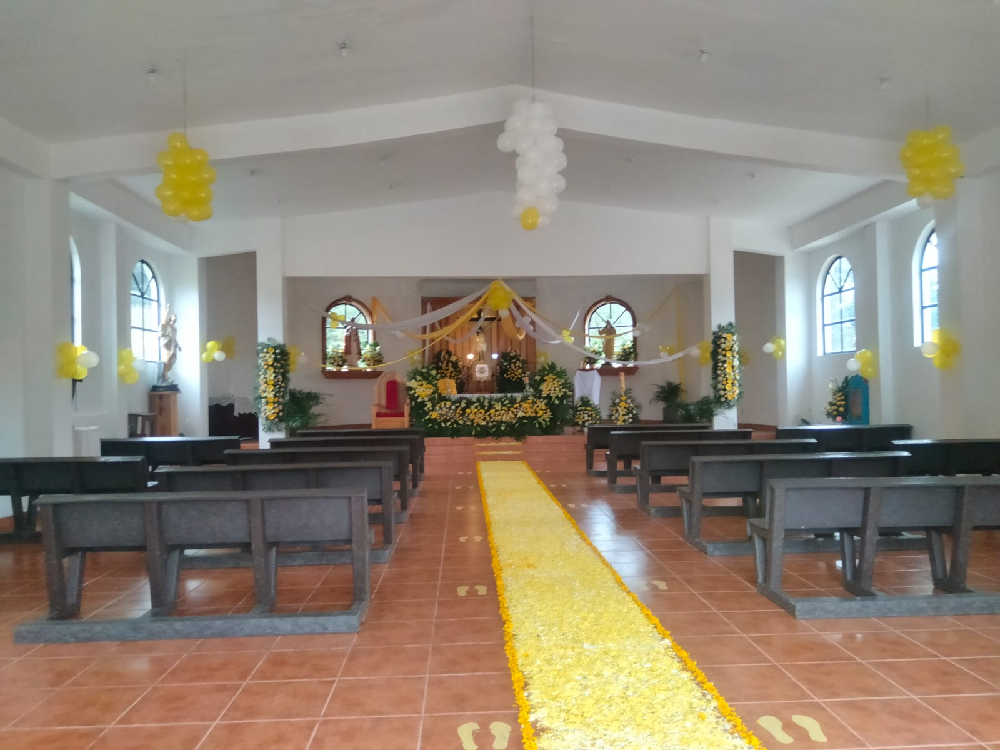
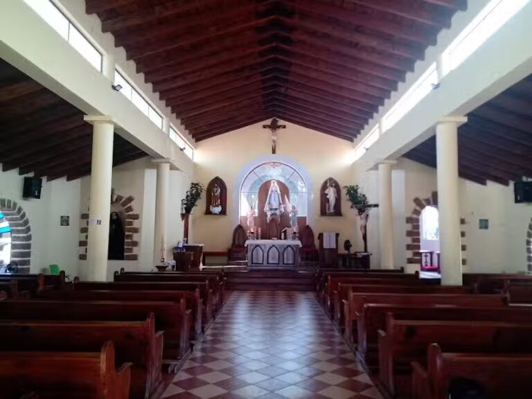

VALLE DE BRAVO, CENTRO
Cada 4 de octubre se realiza la tradicional Fiesta de San Francisco de Asís
Es en honor al patrono de Valle de Bravo, al que ofrecen mañanitas, una celebración eclesiástica en la que este año participó la alcaldesa Michelle Núñez Ponce, donde hubo también desfile y concurso de yuntas adornadas con flores y de mojigangas

Santa María Ahuacatlán
Cada 3 de mayo se celebra la fiesta del santo patrono El Cristo Negro de la parroquia de Santa María Ahuacatlán

A los 28 dias de agosto de cada año se le celebra a el santo San Agustin
La comunidad le celebra con mañanitas, misa en su honor y con la tradicional convivencia en la noche.

CERRO COLORADO, VALLE DE BRAVO
La fiesta patronal de la Inmaculada Concepción se celebra cada 8 de diciembre, aunque la parroquia puede tener celebraciones locales adicionales
La solemnidad de la Inmaculada Concepción se celebra universalmente el 8 de diciembre, y es la fecha en que templos dedicados a esta advocación realizan su fiesta patronal